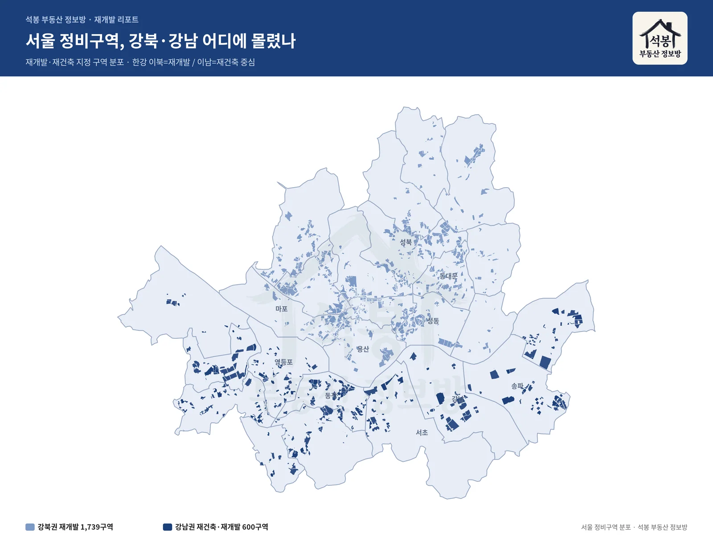
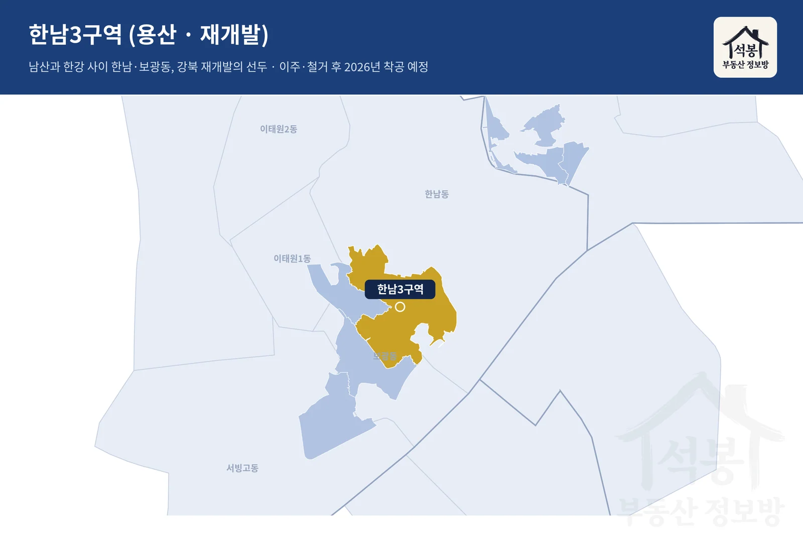
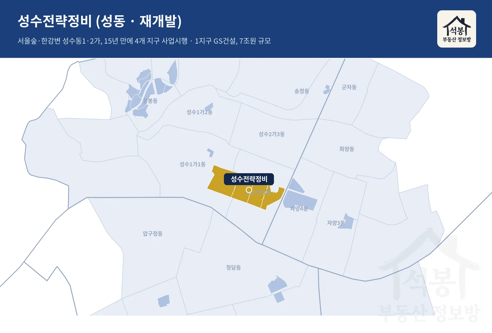
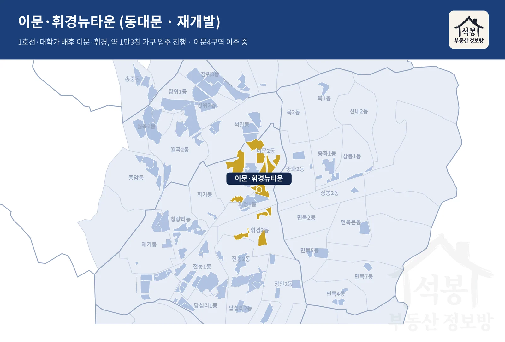
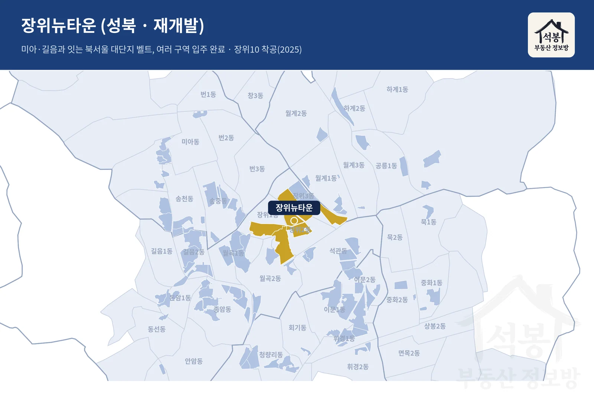
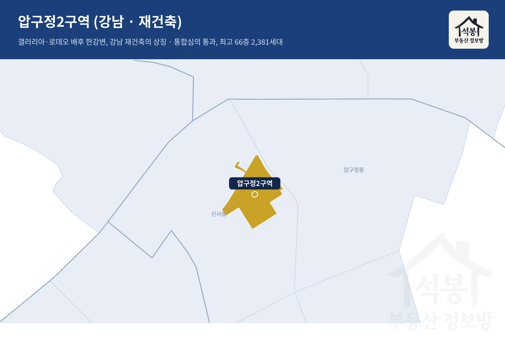
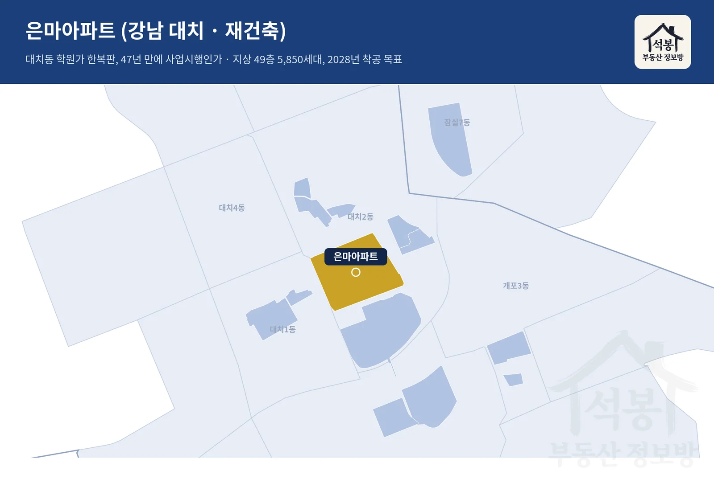
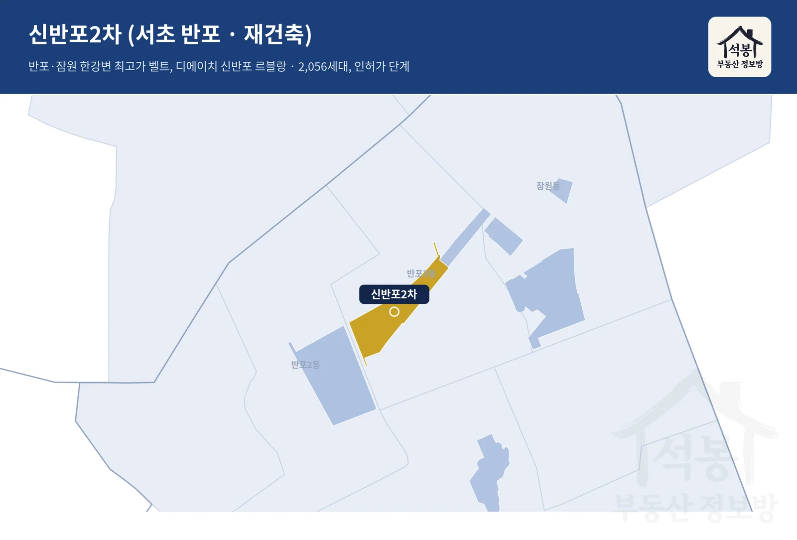
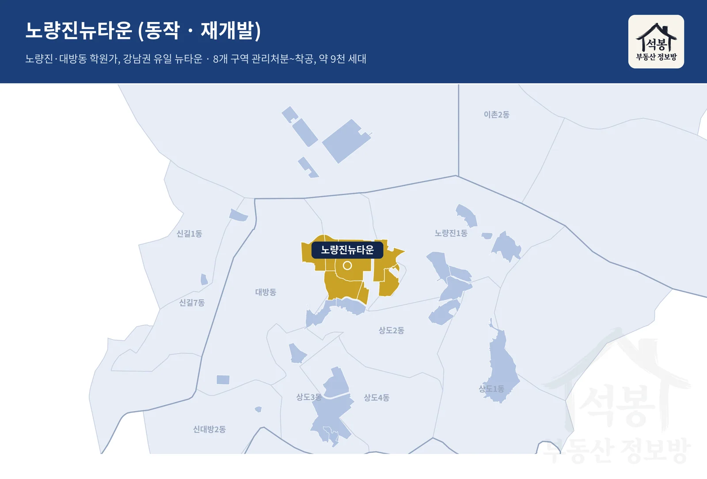

서울의 낡은 동네가 새 아파트로 바뀌는 방식은 크게 둘입니다. 낡은 단독·다세대를 통째로 허무는 재개발(뉴타운)과, 낡은 아파트를 다시 짓는 재건축입니다. 재미있는 건 지역이 갈린다는 점입니다. 강북은 재개발이, 강남은 재건축이 주력입니다. 그리고 두 축 모두 2026년 들어 인허가에 속도가 붙었습니다. 오늘은 강북과 강남의 대표 구역이 각각 어디까지 왔는지, 그리고 그 동네의 대장 단지는 어디인지 정리했습니다.
먼저 큰 그림입니다. 재개발이든 재건축이든 새 아파트가 되기까지는 구역지정 → 추진위 → 조합설립 → 사업시행인가 → 관리처분 → 이주·철거 → 착공 → 준공의 8단계를 거칩니다. 값이 크게 뛰는 지점은 보통 조합설립과 관리처분 전후입니다. 그래서 "우리 동네가 지금 몇 단계냐"가 곧 투자 판단의 출발점이 됩니다.
서울 전체에서 정비구역이 어디에 몰려 있는지부터 지도로 보겠습니다. 강북(연파랑)은 도심 곳곳에 뉴타운 재개발이 촘촘하게 흩어져 있고, 강남(네이비)은 한강변 재건축 단지에 뭉쳐 있습니다.

강북: 재개발 뉴타운, 마무리 국면에 들어섰다
강북권(한강 이북)은 뉴타운 재개발이 눈에 띄게 후반부로 접어들었습니다. 대표 네 곳을 하나씩, 그 동네가 어떤 곳인지와 함께 확대 지도로 보겠습니다.
한남3구역 (용산)

확대 지도
남산과 한강 사이에 자리한 한남동은 이태원·유엔빌리지를 낀 서울의 대표 고급 주거지입니다. 그중 한남3구역이 강북 재개발의 대장으로, 지도에서 보이듯 이태원동 아래 한남동·보광동 일대에 넓게 걸쳐 있습니다. 2023년 관리처분인가를 받고 2025년까지 이주를 마쳤으며, 지금은 철거가 한창입니다(2026년 4월 기준 공정률 약 80%). 5,988세대 '디에이치 한남'으로 지어지고 2026년 안에 착공이 예정돼 있어, 8단계 중 이주·철거를 지나 착공을 코앞에 둔 강북 최선두입니다.
성수전략정비 1~4지구 (성동)

확대 지도
서울숲과 한강을 낀 성수동은 낡은 준공업지역이 카페·패션·IT 거리로 바뀌며 뜬 동네로, 인근에 아크로서울포레스트 같은 초고가 단지가 들어서 있습니다. 지도 속 성수동1·2가 한강변에 자리한 성수전략정비는 재개발의 상징인데, 15년 넘게 정체됐다가 4지구가 2026년 2월 통합심의를 통과하며 사업시행 단계로 올라섰고, 1지구는 GS건설을 시공사로 확정했습니다. 4개 지구를 합친 규모가 7조원대에 이릅니다.
이문·휘경뉴타운 (동대문)

확대 지도
지도에 펼쳐진 이문1·2동과 휘경동 일대는 1호선과 경희대·외대 대학가를 배후에 두고 청량리 광역환승 개발의 수혜를 받는 대규모 뉴타운입니다. 이문1(래미안라그란데)·이문3(이문아이파크자이)·휘경3가 잇달아 준공해 약 1만3천 가구가 들어섰고, 이문4구역이 이주 중입니다. 계획이 아니라 실물로 바뀐 대표 사례입니다.
장위뉴타운 (성북)

확대 지도
지도 속 장위1·2·3동을 아우르는 장위뉴타운은 4·6호선을 끼고 미아·길음 뉴타운과 이어지는 북서울 대단지 벨트입니다. 여러 구역이 이미 입주를 마쳤고, 17년간 표류하던 장위10구역이 2025년 말 마침내 착공했습니다(대우건설, 1,931세대). 강북 재개발이 "계획"에서 "실물"로 넘어가고 있음을 보여주는 동네입니다.
강북권 대장 단지 (최근 6개월 실거래 · 전용 평당)
1. 성동 옥수 래미안 옥수 리버젠 1.24억/평
2. 용산 이촌 한가람 1.18억/평 · 3. 마포 아현 마포래미안푸르지오 1.17억/평
여기서부터는 회원에게 보여드립니다
카카오 로그인 3초면 전문을 읽을 수 있습니다. 무료입니다.
가입하시면 지역 시장조사 보고서(약식)를 2회 무료로 요청하실 수 있습니다.
이미 회원이면 같은 버튼으로 로그인만 됩니다
강남: 재건축, 이제 막 시동을 걸었다
강남권(한강 이남)은 낡은 아파트 재건축이 주력인데, 강북보다 한 박자 이른 단계에 몰려 있습니다. 다만 2026년 들어 굵직한 단지들이 잇따라 사업시행인가를 받으며 시계가 빨라졌습니다. 대표 네 곳을 동네와 함께 봅니다.
압구정2구역 (강남)

확대 지도
지도에서 신사동·압구정동 한강변에 걸친 압구정 현대아파트 일대는 갤러리아·로데오거리를 배후에 둔 강남 재건축의 상징입니다. 그 선두인 압구정2구역이 2026년 7월 통합심의를 통과하며 최고 66층 2,381세대 계획을 확정했고, 3·4·5구역이 뒤를 잇습니다. 압구정 전체는 약 1만1,800세대 규모의 한강변 단지로 다시 태어난다는 청사진입니다.
은마아파트 (강남 대치)

확대 지도
지도 속 대치동 학원가 한복판, 3호선 대치·도곡역을 낀 은마아파트는 강남 재건축의 대명사입니다. 47년 된 이 단지가 2026년 7월 2일 마침내 사업시행인가를 받았습니다. 지하 6층~지상 49층, 5,850세대로 지어지며 2028년 착공이 목표입니다. 관리처분과 이주라는 고비가 남았지만, 오래 멈춰 있던 시계가 다시 돌기 시작했습니다.
신반포2차 (서초 반포)

확대 지도
지도 속 반포·잠원동 한강변은 아크로리버파크·래미안원베일리 같은 강남 최고가 단지가 늘어선 자리입니다. 신반포2차는 현대건설이 '디에이치 신반포 르블랑'으로 2,056세대를 짓기로 하고 인허가 단계를 밟고 있습니다. 완공되면 이 일대 한강변 새 아파트 벨트에 한 자리를 더합니다.
노량진뉴타운 (동작)

확대 지도
지도에 걸친 노량진동과 대방동 일대, 곧 노량진 학원가와 1·9호선 환승·여의도·용산 접근성을 갖춘 노량진뉴타운은 강남권에서 유일하게 재건축이 아닌 재개발입니다. 8개 구역 약 9천 세대가 전부 관리처분 단계에 올라섰고, 6·8구역은 이미 착공, 1·3구역은 이주에 들어갔습니다. 강남권 재개발로는 가장 앞선 곳입니다.
강남권 대장 단지 (최근 6개월 실거래 · 전용 평당)
1. 서초 반포 래미안원베일리 2.46억/평
2. 강남 압구정 한양1차 2.31억/평 · 3. 서초 잠원 아크로리버뷰신반포 1.95억/평
정리하면, 강북은 결승선 강남은 출발선
같은 서울인데 단계가 이렇게 다릅니다. 강북 재개발은 한남·이문·장위처럼 착공과 입주로 넘어가는 구역이 늘며 결승선에 가까워졌고, 강남 재건축은 압구정·은마처럼 이제 막 사업시행인가를 받은, 출발선에 선 구역이 많습니다. 뒤집어 보면 강남 재건축은 아직 앞으로 거쳐야 할 단계가 많다는 뜻이고, 그만큼 시간과 변수(공사비·이주·분담금)도 남아 있습니다.
값은 이미 벌어져 있습니다. 최근 6개월 실거래로 보면 강남권 대장(반포 래미안원베일리 2.46억/평)과 강북권 대장(옥수 리버젠 1.24억/평)의 평당가는 약 2배 차이입니다. 흥미로운 건 강남의 대장 후보들이 지금 재건축을 진행 중인 압구정·반포라는 점입니다. 지금의 대장과 미래의 대장이 같은 동네에 겹쳐 있는 셈입니다.
진행단계는 각 구역 조합·지자체 고시와 언론 보도(국토일보·머니투데이·서울신문·아시아타임·파이낸셜뉴스 등, 2026년 7월 기준)를 종합한 것으로, 수시로 바뀔 수 있습니다. 대장 단지 평당가는 국토교통부 실거래가 최근 6개월치 전용면적 기준 중위값이며, 거래가 적은 단지는 재건축 기대가 크게 반영될 수 있습니다.
원자료: 국토교통부 실거래가 공개시스템(최근 6개월 서울 아파트 매매) + 각 정비구역 진행단계 언론 보도 종합(2026년 7월 기준) · 편집·제작: 석봉 부동산 정보방 · 본 자료는 정보 제공 목적이며 투자 권유가 아닙니다.